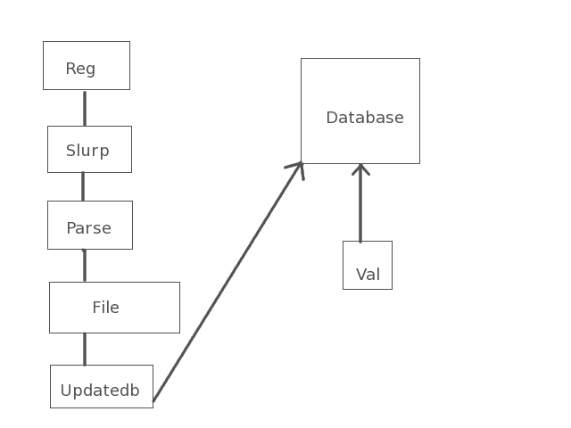

| Validation (Documentation) | ||||||
|
||||||
Hosted by:
HEASARC
|
|
|
Hosted by: HEASARC | ||||||||||||
The validation of data in the STScI registry is a two-part process:
A) Collecting data from the Registry and Updating our local database
B) Validating the services in our database and storing the results.
Since there are approximately 6,000 unique records to validate, we validate 300 per day. All results are stored
with a timestamp. After all records have been validated, the validation starts with the record with the oldest timestamp
and the process repeats itself.
Once a month, we download the Cone, Siap,SSA and Registry services from the registry and store them in separate files. The download
by default is an XML structure so this results in 4 separate XML files. This process is handled by the get_datatype.pl Perl program.
The outputs of the above program are then parsed. Metadata for each individual service are extracted and stored in simple ascii files that contain data of the same type. There will be four final output files, one for each datatype we are validating (Cone, SIAP, SSA and Registry). This procedure is
handled by the Perl tool parse_registry_resources.pl
Lastly, the updatedb.pl Perl program looks at each unique service contained in the output files above and updates the database. New
services are added to our database and a mail is sent to the user on identifiers that have been deleted from the STScI registry. It is then up to the user
to manually delete this data from the local database
We validate each service at least once per month. We select n/30 records per day from our database (based on oldest timestamp) where 'n' is the total number of records and 30 represents the average number of days in a month. The n/30 records are then validated by calling on the SIAP/Cone/Registry validators. Results are then stored in our database. This process is handled by the validation system
Diagram (download and validation)
Runs every 30 days Validation Runs Daily
We use a MySQL database. The internal database is called validation and it contains five tables. The tables are Services, Tests, Errors,ErrorCodes,and Test. A detailed
description of the database and its tables can be found here.
Access to the validation database is achieved via the Perl DBI driver for perl programs. For the Java side validation, access is achieved via JDBC.
We provide a perl cgi tool to view the validation results stored in the local database.Information on the validation home page and how to use it can be found here
Update DB - needs to use the files created after the registry download.
Validation - Tests are run on the service URLs contained in the db. However, there are cases where the system uses an override file to create a test. For example, SSATheory services which account for a very small fraction of the total number of services, require a separate specialized test. The system therefore uses an external file to override the default test behavior for SSA services.
To download the tarball of the system and find out how to run it, read this
Developed with the support of the National Science Foundation
This NVO Application is hosted by LocalSiteName |
Member |
Meet the Developers |
Hosted by the Astrophysics Science Divisionand the High Energy Astrophysics Science Archive Research Center (HEASARC)at NASA/GSFC
HEASARC Director: Dr. Nicholas E. White,
HEASARC Associate Director: Dr. Roger Brissenden,
Responsible NASA Official: Phil Newman